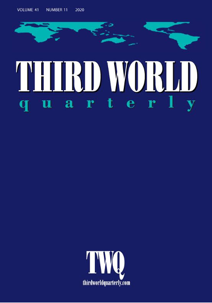

收录于合集

作品简介
【作者】 Sophie Harman，伦敦玛丽女王大学政治与国际关系学院教授。她的研究兴趣包括全球卫生、非洲能动性（African Agency）、电影与视觉方法、性别政治等。
【编译】 周玫琳（国政学人编译员，伦敦大学亚非学院历史系博士生）
【校对】 谢菁
【审核】 王川
【排版】 陈育涵
【美编 】游钜家
【来源】 Harman, S. (2016). Ebola, gender and conspicuously invisible women in global health governance. Third World Quarterly , 37(3), 524-541.
期刊简介

《第三世界季刊》（Third World Quarterly）于1979年由位于英国伦敦的劳特里奇出版社创办。该期刊是国际问题研究领域的一份同行审议期刊，主要关注有关发展话语的全球讨论议程，其视野超越传统的“发展研究”，为发展践行者与规划者们在微观经济与基层层面上的行动提供新颖而全面的分析。根据2018年的期刊印证报告（JCR），该期刊的影响因子为2.156，在41种发展研究类期刊中列第11位。
埃博拉、性别与全球卫生治理中显然隐形的妇女
Ebola, gender and conspicuously invisible women in global health governance
Sophie Harman
内容提要
针对埃博拉疫情的国际反应引起了关于全球卫生治理中妇女与性别显著隐形性的激烈争论。立足于有关性别盲视（gender blindness）、照料（care）与男性偏见（male bias）的女性主义研究，本文利用埃博拉疫情这一案例，探究全球卫生如何一边依靠妇女在正式和非正式的照料角色中明显免费的劳动力，一边却在政策与实践中令妇女匿迹隐踪。为此，本文说明了妇女与性别在如下三方面的显著隐形性：一是关于埃博拉疫情的叙述；二是短期与长期的疾控战略；三是世界卫生组织（下文称世卫组织）与世界银行（下文称世行）的卫生系统加强计划。
文章导读
01
导言
围绕2014年爆发于西非三国（几内亚、利比里亚和塞拉利昂）的埃博拉病毒病（Ebola），国际社会的反应和话语使全球卫生治理中的一个核心悖论引起了激烈争论：妇女和性别的显著隐形性（conspicuous invisibility）。除了少数领导全球机构的有名女性（如世卫组织总干事陈冯富珍）之外，妇女在全球卫生治理中显然是被忽视的：全球卫生工作者深知，承担照料任务的妇女构成了卫生系统的基础，但在全球卫生战略、政策与实践中，她们却不见踪影。妇女只有通过承担母亲这一角色才能被看见。这里的问题不仅是妇女显著的隐形，还是性别的隐形，因为全球卫生政策与实践无视并加强了照料和社会再生产的性别化规范（gendered norms）。本文以埃博拉应对行动为案例展开研究，旨在说明短、长期全球卫生政策实践中妇女的显著隐形性和性别化的照料角色。
02
性别、照料与社会再生产
本节将“显著隐形性”这一概念置于更宽泛的女性主义研究与讨论中，其涉及的议题包括国际政策制定中的 性别盲视（gender blindness）、照料（care）以及社会再生产（social reproduction）。
照料是女性主义政治经济学与公共卫生学领域的一项关键议题，它涉及到妇女在照料经济中的低偿或无偿劳动，也和家庭与社区中社会再生产角色的负担有关。无论在公共还是私人层面，提供照料（care- giving，例如看护、照顾）的负担都是高度女性化（feminised）的。女性化的照料负担不仅可从性别规范的角度进行解释，还来自于人们将妇女视作一种与家庭及社区中与社会再生产相关的性别期待。社会再生产的作用在社会和国际公共政策制定中或被低估，或被预设，继而难以获得薪酬或获得低薪。妇女在这种低偿或无偿的再生产性经济中有过高的代表性，但在有偿的生产性经济中却代表性不足。女性化的无偿再生产性照料经济在危机时刻充当“缓冲器”，在国家、雇主或个人无法支付薪酬时担起照料的职能和负担。
根据女性主义研究，在公共政策制定中，妇女在社会再生产和照料角色中的表现总被预设（为理所当然）或被无视。该现象可用政策制定过程中的“男性偏见”（male bias）这一概念来解释。男性偏见并非是故意（形成）的，而是一种对“有利于男性、不利于女性、而非所有男性都对女性有偏见”的经济结构性盲视（blindness）。由于妇女在再生产部门中过高的代表性，且其再生产角色被赋予过少的社会与财务价值，女性主义政治经济学者们提出，无偿的照料经济必须成为政策制定中具有高度显性的一部分。
正规或非正规的照料经济与政策制定过程中关于性别的预设，对全球卫生而言也是重要却屡被忽视的部分。照料的提供、卫生保健和健康身体的再生产（即生殖）是社会再生产的核心部分，而社会再生产又是卫生系统运作的关键。通过一般无偿的劳动，妇女扮演了社会再生产的角色，奠定了卫生系统的基础。
照料的性别维度，以及公共卫生中的照料负担，其实早已获得一些著名学者的认同；尤其是当这些问题与艾滋病相关，它们引起了越来越多的关注，也获得了一些国际机构的反响。但这种认识只局限于某些关键报告和部门，并未广泛涉及更多的卫生问题或疫情。而且，性别问题被日渐化约为孕产妇或生殖健康问题。在全球卫生政策中，当代女性主义理论和辩论、照料经济的角色和交叉性（intersectionality）问题或是缺位，或是被工具化，以至于妇女（总在）实现更宽泛的健康目标。这恰恰是全球卫生的一个核心悖论：女性在照料与卫生的提供上如此显见，却在制定并实施全球卫生战略的机构与政策中不见踪影。
立足于女性主义政治经济学的目标，并在对国际政策与经济结构动态理解中承认再生产（的意义），本文利用“显著隐形性”这一概念来说明妇女和性别如何被置于2014年的埃博拉危机之外，又如何被置于更宽泛的卫生系统长期战略之外。在全球卫生治理中，妇女的照料角色一方面作为日常医疗保健中如此显著的要素，另一方面却在有关全球卫生的讨论或策略中被人为忽视。
03
描述埃博拉“危机”
本节对2014年1月至2015年1月出版的有关埃博拉的文献进行综述，旨在说明该“危机”是如何被全球卫生治理中关键的意见与知识塑造者所表述的。
《柳叶刀（Lancet）》和《新英格兰医学杂志（New England Journal of Medicine）》等旗舰出版物发表的研究和观点在全球卫生领域具有核心的倡导和政策制定功能，对于理解针对埃博拉的政策反应以及妇女和性别在全球卫生中的作用至关重要。2014年，埃博拉病毒病被确认为“国际关注的突发公共卫生事件”，继而引起学术界和舆论界的热烈争论。利用RefWorks数据库，作者检索了从2014年1月至2015年2月在公共卫生、政治和社会科学领域中有关“埃博拉”的文章、报道和观点，继而通过文献综述识别出了这场争论中的四种主要叙述框架，它们分别聚焦于如下事项：一，美国政府对疫情的反应，以及对从西非返回的人员的隔离检疫问题；二，对埃博拉疫苗和治疗的需求，以及在紧急卫生情况下利用随机对照试验和未经证实的治疗方法所引起的伦理争议；三，西非的埃博拉危机如何成为紧急事态，又如何诞生于资金不足的卫生系统、失败的公共基础设施；四，针对埃博拉疫情爆发的国际反应，尤其是以世卫组织为代表的关键机构的失败。总体而言，在关于这场危机的叙述中，关于妇女和性别的内容是缺位的。在作者考察的61篇相关文章中，只有一篇完全关注妇女，还有一篇关注性别，且它们均未融入主流叙事。
作者通过文献综述得出观察结论：围绕埃博拉应对措施的叙述，都没有充分探讨该疾病和被性别化的卫生系统如何不成比例地影响到妇女。当性别问题得到考虑，它总是被如此化约：妇女是弱势风险群体，她们或是承担照料者的角色，或是获得母婴保健服务的母亲。无论是应对埃博拉病毒蔓延的短期问题，还是发展强有力的卫生系统的长期战略，埃博拉危机都未被描述为一场性别化的危机，妇女也未被描述为一种（值得）特别分析的关注点。这些叙事的建构方式以及其中妇女和性别的框定模式很重要，因为它们反映并设置了关于埃博拉的国际公共政策的辩论（的议程），且体现了全球卫生意见和研究中妇女的隐形性和性别问题。
04
性别与应急政策：埃博拉疫情应对
本节主要考察世行和世卫组织应对埃博拉疫情的短、中期举措，以揭示妇女和性别的在其中的隐形性。
在国际公共政策战略中，也存在围绕埃博拉应对措施的讨论过少涉及性别和妇女这样的问题。由世卫组织和世行等机构制定的这些战略，很少涉及埃博拉的短期和长期影响如何对男女产生不同的影响，并且不承认性别是照料生产和消费过程中的一个因素。联合国妇女署和非洲开发银行等机构在讨论埃博拉的短期和长期反应及影响时，都涉及性别问题，但这些机构的讨论所依凭的未经证实的数据与世卫组织关于该病的官方流行病学数据不符。
作为卫生领域的主要联合国机构，世卫组织在埃博拉应对工作中发挥了核心作用。该组织的“埃博拉疫情应对路线图”是对埃博拉做出国际反应的旗舰性协调文件。在这份长达20页的文件仅用一句话强调了妇女和一些弱势群体的需求。该文件没有进一步解释妇女的“需求”是什么，没有将其列为优先活动，也没有在其监测和评估框架中按性别分列指标。这是一个明显的遗漏，因为未衡量埃博拉病毒对男女潜在的不同影响和死亡率表明世卫组织并未意识到或不关心性别如何影响疾病的传播和治疗。直到2015年12月的第17份状况报告（距几内亚出现首例疑似埃博拉病毒病例已过去一年），世卫组织才发布已证实的按性别分类的埃博拉病毒病例数据。该组织的《埃博拉病毒流行的一年》报告仅在最后提及妇女需要更多精神和物质支持，且完全没有考虑性别问题。
自埃博拉疫情爆发以来，世行在筹集抗疫资源以及考察该病对西非三国的经济影响方面发挥了关键作用。世行的工作重点是彰显西非三国和全球卫生制度在应对埃博拉病毒方面的准备不足，以及这些国家可能遭受的短期和长期经济损失。世行认为，由于妇女（一般）从事非正规、自雇的工作，尤其容易遭受这种经济损失，但对性别的考虑很有限。该机构2015年初发布的一份报告详细介绍了埃博拉病毒对矿业、农业、服务业和食品价格等经济方面的潜在影响，但没有讨论潜在的性别化影响或妇女在这些经济中的作用。在关于埃博拉病毒的社会经济影响的每一轮针对特定国家的研究中，性别问题均未系统地包含在内。可以说，世行未充分考虑埃博拉病毒对西非三国的卫生系统和经济施加的性别化影响。
国际机构中，只有联合国妇女署和非洲开发银行关注埃博拉的性别化影响。在非洲开发银行的性别问题特使发布的一则博客中，作者强调了妇女获得医疗服务的限制以及埃博拉病毒对她们就业的影响，其主要论点是考虑埃博拉对妇女的工作和生计的长期影响。但是，该博客引用了一组来自《华盛顿邮报》的数据——该数据表明西非三国因埃博拉病毒死亡的人数中，妇女都多于一半，在利比里亚甚至高达75%。这组数据也被联合国妇女署的机构间常设委员会发布的关于埃博拉的“性别警报”所引用。但关键是，当世卫组织于2014年12月按男性和女性对数据进行分层后，证明联合国妇女和非洲开发银行文件中引用的《华盛顿邮报》的数据是不准确的（对利比里亚而言尤其如此），更多证据还说明联合国妇女署所采用的一些假定是不正确的。在将累计确诊和疑似病例的数据分层之后，“男性和女性的病例数大致相同”。由此，可以说感染埃博拉病毒或乃至死亡的人数上没有性别差异，性别不是全球应对埃博拉病毒的关注点或优先事项。
对妇女和性别的可见度来说，上述数据差异是很有问题的。首先，有很多迹象表明此类数据尚无定论。世卫组织承认，确诊和疑似病例均为估计数，可能比情况报告所显示的高2-4倍。鉴于西非三国的卫生系统存在基础设施问题，提供疫情信息和确认埃博拉病例非常困难。实验室数量少、IT服务与卫生部门之间的信息管理问题、社区内的污名化和保密性问题使人们自行隐藏或处置死者而不报告，都可能导致跟踪和记录确诊和疑似病例过程中出现问题。其次，世行和世卫组织发布的研究往往以定量估计为基础，而没有考虑可能会讲出不同故事的实地定性研究，尤其是在研究涉及性别敏感性、等级制度以及埃博拉对男女影响不同的情况下。第三，联合国妇女署发布的有冲突的数据能被用来抹黑该机构，从而也用来质疑在埃博拉应对行动中提出性别问题的必要性。总之，世卫组织的数据虽然表明在确诊和疑似埃博拉病例中没有性别差异，但它与该疾病的一个重要方面有关，取决于难以估算的约数，并且未采用多种研究方法来应对无法量化的各种影响。总之，仅仅因为延迟的数据表明确诊和疑似埃博拉病例中没有男女性差异，并不意味着性别不是该与该疾病休戚相关的问题。
世卫组织和世行等主要机构在埃博拉疫情上收集的数据和证据并未系统地考虑性别问题，也没有将对男女性别的影响视为不同或值得关注的问题。妇女和性别的显著隐形性，使得世卫组织和世行无法对潜在的性别差异进行任何系统和持续的研究。这在埃博拉应对活动和妇女在全球卫生治理中的地位两方面，都是一个重大遗漏：它假定在卫生服务的提供和接受中不存在性别偏见，并且在公共卫生紧急情况中，性别不是关心或考虑的对象。
05
性别与长期战略：卫生系统
本节进一步探究世行和世卫组织的政策，旨在说明妇女和性别不仅在应对埃博拉的紧急事态下不受关注，在加强卫生系统的长期战略中也依然具有显著隐形性。
埃博拉应对行动带来的核心优先事项之一，是加强中低收入国家的卫生系统。（毕竟）埃博拉病毒蔓延的部分原因，正是相关国家卫生系统薄弱。但是，基于埃博拉疫情来主张加强卫生系统、兑现《国际卫生条例》承诺的倡议者并未提及性别。加强卫生系统的战略侧重于正规经济活动和政府实践，但此类薄弱的卫生系统也依赖于正规照料经济，此类卫生系统通常以志愿照料者组成的非正式照料经济为基础，这些照料者与社区团体、非政府组织协同工作，或根据社区和大家庭的需要独立工作。这些角色往往由妇女担任。但是，由于这些角色是非正式的，并且是根据关于女性工作和男性工作的性别规范而承担的，因此这种照料角色在国际公共政策制定中明显被忽视，即人们知道这种照料角色的存在，知道妇女在其中的代表性过高，但是除非扮演母亲角色，妇女在全球卫生计划、战略和实施中是隐形的。
与针对埃博拉的短期反应一样，加强卫生系统的（长期）全球战略坚定地将妇女定位成母亲。世卫组织关于加强卫生系统的“事关每人（Everybody’s Business）”行动框架尤其如此。该行动框架的文件表明，尽管世卫组织承认卫生人力中的性别差异，但它是在所有人的广泛人权范围内做到了这一点，并将行动重点放在了成员国上。该文件未规定对性别有响应（gender- responsive）的卫生系统的样貌，也未规定世卫组织应如何阐明这种系统，或如何与各国合作推动这种系统。该行动计划对性别的关注主要放在正规卫生工作者上，没有提及非正式照料经济或其中的性别差异。性别被视为获得卫生服务的障碍，尤其是在孕产妇卫生方面的障碍；但在妇女的无偿劳动如何为卫生服务提供支持方面，性别问题是被忽视的。《国际卫生条例》亦是如此，没有提及卫生系统强化中的性别、女性化照料或妇女的非正式角色。由此可见，世卫组织认为，性别只有在影响卫生工作者正式劳动和（人们）获得卫生服务的机会这两方面才是问题，并且假定各国已经意识到这一点并将阐明和采取对性别有响应的卫生系统。
世行的“健康发展”（Healthy Development）”战略将性别纳为了卫生差距和制约因素的指标，但这只是这一战略中极小的组成部分。性别在世行战略中的地位是改善孕产妇健康，并将其作为促使她们参与发展的手段。世行没有在文件中的任何地方承认妇女在发展中有何作用，也没有承认在实现关键的健康和发展优先事项的过程中妇女劳动受性别化影响的方面。妇女在支持关键发展目标、卫生系统目标和指标方面的作用被世行等机构所预设，或是被视为她们在健康条件下才能做的事情。从这个意义上说，妇女的健康本身并不是目的，而是一种手段用来履行社会义务和职能的手段，以获得其作为一种性别被期望提供的发展。
世行战略对妇女的工具性描述，以及该战略与世卫组织对孕产妇保健的关注都不足为奇。长期以来，妇女一直在国际发展中发挥工具性的作用，这被一些学者称为“减轻贫困的女性化”（feminisation of poverty alleviation）。重点在于，这些机构不去挑战或承认妇女在提供免费、有弹性的劳动方面的角色，而这些劳动为卫生系统的运转提供了支持。非正式照料经济是显然被忽视的，而妇女健康也受到这种隐形性的影响，即妇女在全球卫生政策中仅以母亲身份可见。显著隐形性不仅体现了这些机构故意的盲视，还加剧了妇女在社会中的脆弱性以及她们对埃博拉等传染病的易感性。
06
结论：显著隐形的女性与全球卫生治理
有种观点认为，在埃博拉应对行动中未能认识到妇女和性别问题并非故意的盲视，而是由与流行病作斗争的紧急情况造成的。但是，这仅能解释故事的一部分原委，因为随着专业知识的到来，妇女在政策和实践中仍然明显被忽视。埃博拉的案例表明，在发生紧急卫生事件时，性别问题被遗忘，充其量被视为附带问题。如果妇女和性别问题继续隐形下去，卫生系统将继续软弱无力，在应对致命病毒时仰仗于妇女坚韧不拔的品质。这将损害妇女的健康，并固化（既有的）性别预设与照料经济中妇女的显著隐形性。
据此，作者提出三项建议。第一，应将性别意识和规划纳入对复杂卫生紧急事态的业务性响应中。在制定行动计划时，这种意识应该从性别和女权主义研究的基本问题开始，即“妇女在哪里？”流行病学数据需要从一开始就按性别分类；社区动员者要既有男性也有女性；任何行动框架都要了解男女在当地照料经济中的正式和非正式角色。第二，应对国际关注的突发公共卫生事件的人与机构都需要意识到性别对健康结果与危机管理的影响，并知道如何提出使妇女及其需求在应对规划中可见的问题。第三，应将性别平等和非正式经济问题放在加强卫生系统的辩论前列。这条建议又被细分为三步：一，探究男女在正式和非正式医疗卫生服务中分别占据的位置；二，确定如何使卫生系统适应男性和女性的不同需求，特别是在资源匮乏的环境中；三，确保妇女和性别（问题）不仅仅被局限在生殖、孕产妇和新生儿健康方面，而是在整个卫生部门得到系统地解决。
译者评述
结合2014-2015年爆发于西非的埃博拉疫情案例，本文从两个互通的角度丰富了关于全球卫生治理中的社会性别和妇女的知识。首先，本文基于女性主义研究（尤其是关于性别盲视和男性偏见的研究），运用了”显著隐形性“这个看似吊诡的概念，旨在强调一个广泛存在于各行各业的重要悖论：妇女明明承担着众多显著的核心角色，却往往在决策与规划中不见踪影。这一概念并非由本文作者首创，在社会学数据收集方法和种族问题等相关研究中已有过讨论。[1]但本文显然将其移植到了全球卫生领域，对一种普遍现象进行了修辞性概括：妇女的照料与社会再生产角色总被视为理所当然；在学术界、舆论场和政策圈的叙述和实践中，这种重要性或是被忽视，或是被”母亲“这一社会性别规范所期待的角色所裹挟。其次，本文的案例分析还强调了至关重要却屡被忽视的照料问题，这涉及到高度女性化的非正规经济与无偿劳动，也在促进人类劳动权益和健康福祉上发挥着关键作用。[2]在这两点上，本文为推动全球卫生治理进步的方向拓宽了思路，有重要的政策指导意义。不过从理论和实证研究的角度看，本文论述的说服力略有不足。毕竟，“显著隐形性”与其说是概念创新，不如说是作者对认定的某种现象的修辞性描述。虽然这种现象在埃博拉应对活动中的具体表现在文中得到了充分阐述，但要想力证全球卫生治理中“显著隐形性”的存在，也许需要更多国际组织文件表述之外的证据。
与许多女性主义研究和批判理论类似，本文的主要贡献在于解构当下的普遍规范，挑战固化的惯性认知。读者无需在这类论文中寻找科学模型或因果论证，因为在提问“为什么”之前，作者的目标在于围绕事实认知的祛魅。具体到本文，作者在乎的是敦促读者（包括相关国际卫生机构）克服系统性、非自觉的性别盲视和男性偏见，审慎思考一个看似不言自明、实则发人深省的基本问题：“全球卫生中的妇女在哪里？”
在新冠疫情肆虐全球的2020年，这个问题仍旧意义深刻，甚至更加振聋发聩：“在全球人类对抗新冠疫情的战斗中，妇女在哪里？”围绕这一问题，关注性别问题和女性权益的中国读者或许能联想到一系列尚未从公共记忆中淡出的社会事件：抗疫前线的女性医护人员身着为男性体型打造的不合身的防护服，一度难以获得生理卫生用品，还要被部分媒体贴上“怀孕九月上一线”和“剃发出征”的标签，进行充斥着性别偏见的宣传。在正规医疗卫生系统中奋战的她们尚且经历如此待遇，遑论在家庭与社区中默默劳作的妇女。对此，本文能够传达的启示是：如果我们理所当然地以为妇女的贡献已得到相应赞扬，妇女的权益已得到足够保障，或许应该反省，这是否依然是一个“显著隐形性”的陷阱。而反观实际的抗疫经历，我们不难发现一个更残酷的事实，一种摒弃了“显著”矫饰的彻头彻尾的“隐形性”：对太多妇女而言，无论她们身处正规医疗卫生系统还是从事非正规照料活动，无论她们是否为人妻、为人母，其贡献与权益甚至难以获得浮于表面的肯定和捍卫。
因此，本文作者在文末提出的建议对处在新冠时代的全球卫生治理依然有益：在政策和规划阶段及早意识到性别的存在和影响，把性别问题提上讨论的显著位置，才能让妇女切实被看见，令健康成果真正实现“大庇天下寒士俱欢颜”。
参考文献
1] Quinlan, E. (2008). Conspicuous invisibility: Shadowing as a data collection strategy. Qualitative Inquiry, 14(8), 1480-1499; Stevenson, H. C. (2003). Commentary: The conspicuous invisibility of black ways of being: Missing data in new models of children’s mental health. School Psychology Review , 32(4), 520-524.
[2] Koch, I. (2018). The labour of care: why we need an alternative political economy of social care. British Politics and Policy at LSE.
文章观点不代表本平台观点，本平台评译分享的文章均出于专业学习之用, 不以任何盈利为目的，内容主要呈现对原文的介绍，原文内容请通过各高校购买的数据库自行下载。
**
**
**
**
**
**
添加 “国小政”微信
获取最新资讯


国政学人
支持学术公益与知识传播
微信扫一扫赞赏作者 __赞赏
已喜欢，对作者说句悄悄话
取消 __
发送给作者
发送
最多40字，当前共字
上一页 1/3 下一页
长按二维码向我转账
支持学术公益与知识传播
受苹果公司新规定影响，微信 iOS 版的赞赏功能被关闭，可通过二维码转账支持公众号。